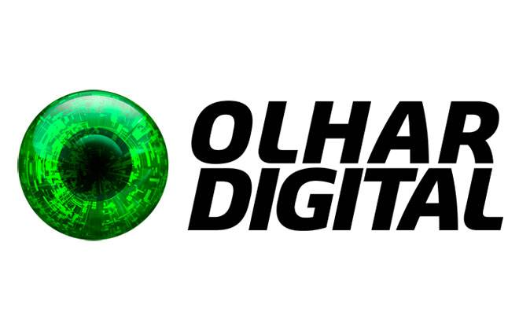
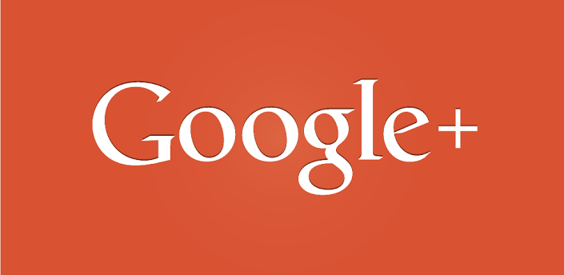

Marketing Digital
"As pessoas não sabem o que querem até você dizer a elas (Steve Jobs)"
Definição
O Marketing Digital como o próprio nome já diz, é o bom e velho marketing aplicado a mídias digitais. O livro 8 P's do Marketing Digital, do escritor Conrado Adolpho traz 8 ações estratégicas utilizando a internet e tecnologias móveis com o objetivo de elevar a participação da empresa no mercado e fidelizar clientes. É uma ferramenta extremamente competitiva e está presente em todos os lugares, inclusive nos smartphones e tablets, tornando-se um canal abrangente que possui diversas possibilidades para ações de divulgação de uma marca, fazendo com que uma empresa se destaque das demais. A tecnologia está entrando cada vez mais fundo no mundo dos negócios, permitindo assim que o profissional de marketing identifique consumidores em potencial, apresentando produtos específicos para cada perfil.
Se nossa vivência mudou após a internet, o mesmo aconteceu com o processo de compra. Desde a década de 1990, o Marketing Digital mudou a maneira das empresas utilizarem a tecnologia na promoção de suas transações. Atualmente, é usual fazer compras pela internet, e é por isso que devemos dar importância a este novo tipo de mídia. Embora exija investimento, pode se tornar, no final das contas, mais barato que os veículos convencionais.Ele é capaz de lembrar a preferência de pedidos do comprador, tipos de produtos, com que frequência ele compra, em quais quantidades, se é um presente ou se é para uso próprio, etc. O desenvolvimento constante dessas novas tecnologias amplia o potencial das estratégias do marketing digital. É o plano de comunicação ideal para que as empresas ganhem espaço e se tornem referência perante seu público alvo. Pensando nisso preparamos uma passo a passo para você começar a entrar nessa nova era.
5 Dicas Úteis
1 - Divulgue seus valores nas Redes Sociais
Entre nas redes sociais e divulgue a empresa e seus valores antes de anuciar produtos e serviços. Socialize para criar um vínculo de credibilidade
2 - Objetivo
Divulgue um conteúdo de qualidade, prático e objetivo que resolva o problema do cliente rapidamente.
3 - Qual a frequência
As açoes devem ser planejadas de acordo com o perfil da sua empresa e do público alvo que pretende atingir. Os efeitos de um marketing agressivo e desfigurado por ser desastroso. Mantenha suas redes sociais sempre atualziadas para se aproximar cada vez mais dos seus clientes. Crie uma rotina de postagens.
4 - Como utilizar
- Faça postagens regulares.
- Peça sugestões ou notas a seus seguidores
- Monitore os resultados
- Verifique os comentários
- Analise o retorno
- Aplicativos que podem te ajudar:
5 - Qual mídia devo usar?
Procure a mídia social que mais tem haver com o seu produto, público alvo e o alcance desejado. Existem várias mídias que se destacam, exemplo:
-

Ainda vale a pena investir em Blogs. O grande segredo é ter um conteúdo que resolvo o problema do cliente. Procure ter mais pessoas escrevendo no seu blog, pontos de vista diferentes tem maior chance de converncer o cliente a voltar.

Página destinada ao âmbito profissional, rede social de relacionamento entre empresas e candidatos. Procure participar de grupos, organizar eventos e se possívbel faça negócios. Mantenha a rotina de publicações pelo menos 1 vez ao dia.
Possui um número muito grande de usuários consumidores de informção. Seja criativo e aproveite bem o espaço limitado de caracteres. Utilize a Hastag com uma ou mais palavras chaves que tenha relacionamento com sua marca, produto ou serviço.

Atinge todas as classes. Mantém você em contato com amigos e clientes futuros por meio de grupos, fan page, feed de notícias. Anuncie todos os dias se possível, sempre tem alguem disponível.

Menos popular do que no Facebook mas tem a vantagem de ajudar você a ficar melhor rankeado na busca.

Como o ditado diz: "Uma imagem pode dizer mais do que mil palavras". Por isso use o Instagram e o Pinerest para divulgar suas fotos. Menos popular do que no Facebook mas tem a vantagem de ajudar você a ficar melhor rankeado na busca. Capiche na qualidade da foto e do contwúdo e você terá um ótimo retorno.

Faça videos criativos com baixo custo. Mas tome cuidado com a qualidade do vídeo e também do áudio. É preciso conhecer um pouco sobre edição caso seja necessário. Se conseguir criar uma marca boa e o conteúdo relacionado for de igual nível seu vídeo pode viralizar e fazer com que ganhe destaque no site. O grande objetivo além de obter visualisações, é também tentar fidelizar o cliente fazendo com que curta o vídeo e se inscreva no seu canal.